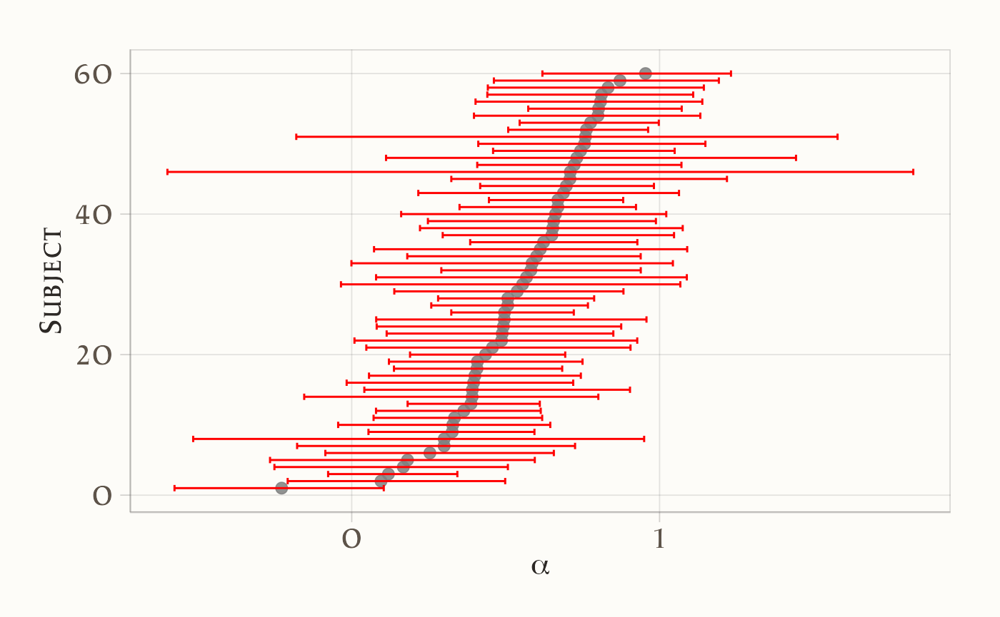
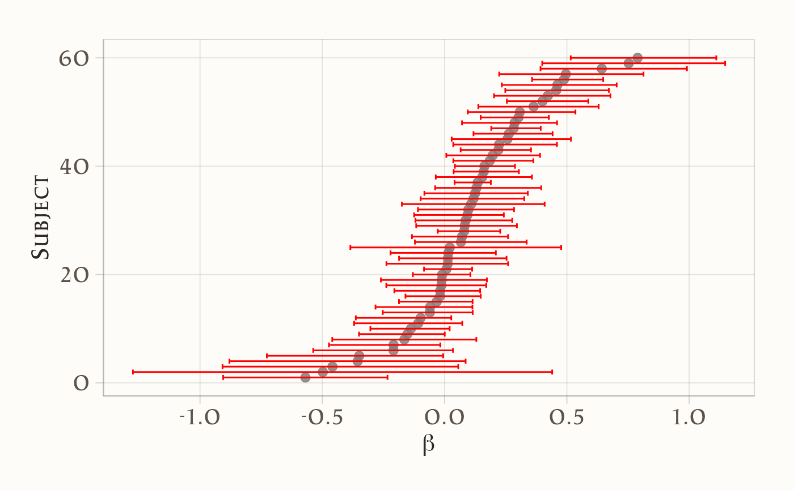
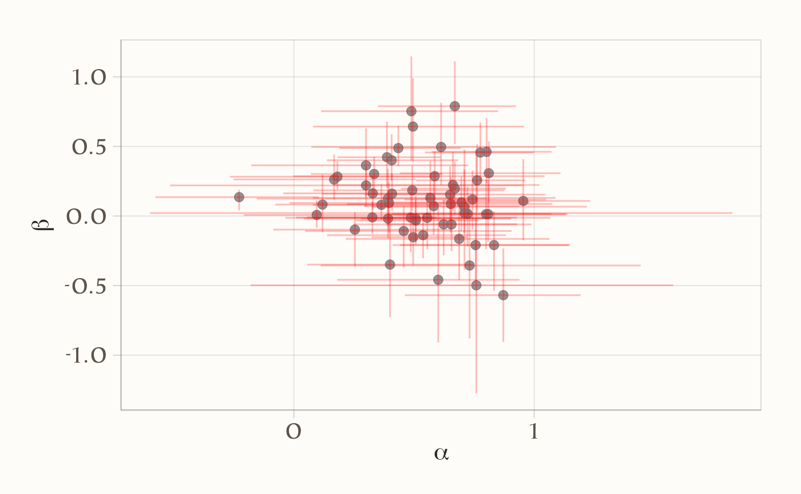
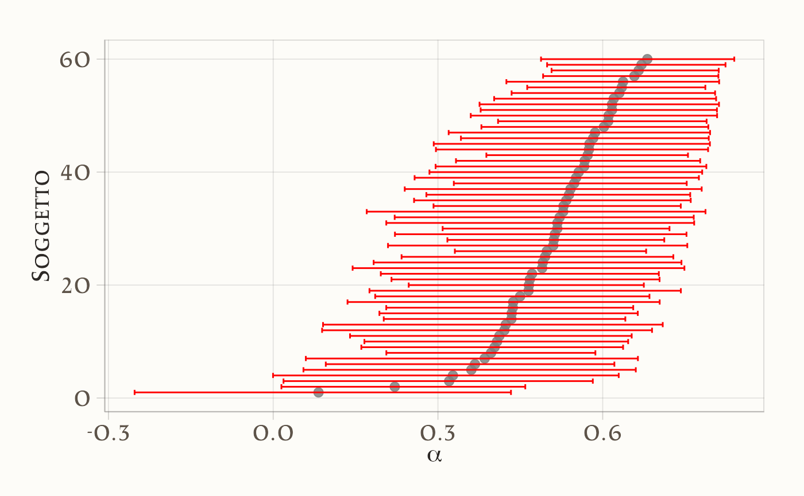
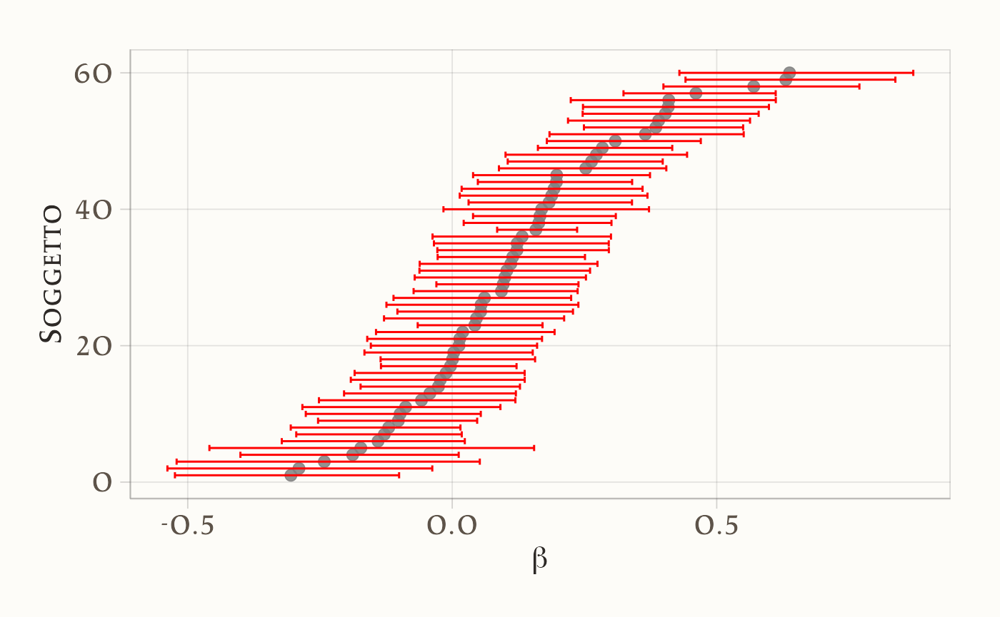
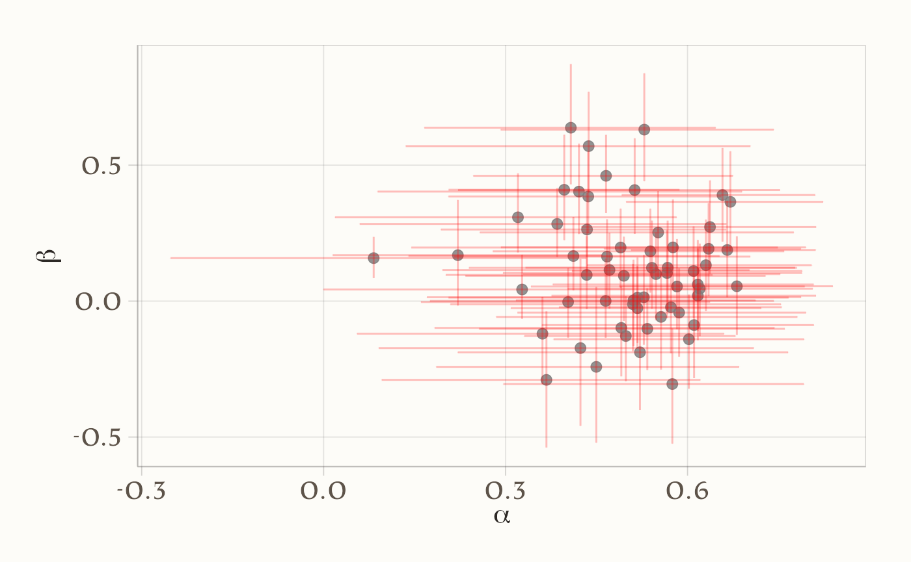
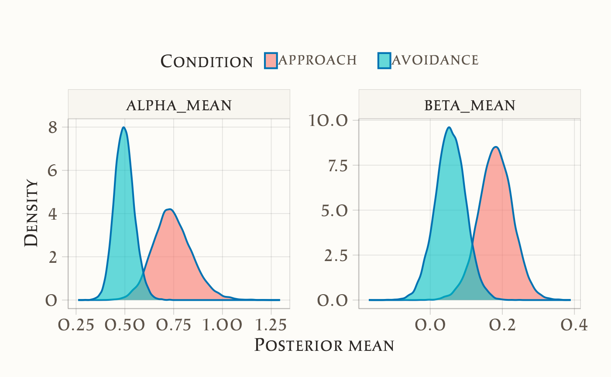
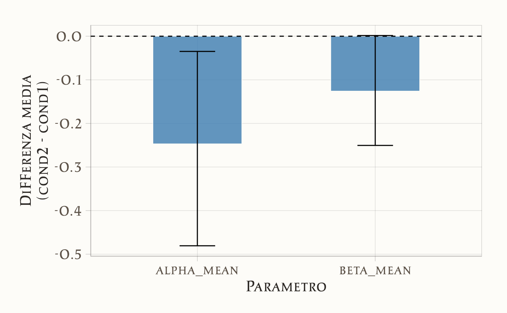

46 Estensioni
“People change over time. … describing and explaining change over time must focus on dynamics in response to environmental cues and competing internal states. That is, we must include time and change over time in our models.”
– Wilt, J., It’s about time: Emphasizing temporal dynamics in [personality] (2003)
Introduzione
Sulla scia di Knight et al. (2023), in questo capitolo estendiamo il modello presentato in precedenza lungo tre direzioni complementari. Partiamo dal livello individuale (person-level), in cui stimiamo per ciascun partecipante i propri parametri \((\alpha_i, \beta_i)\). Questo passaggio consente di mappare l’eterogeneità interindividuale (sensibilità al feedback e deriva motivazionale), ma lascia le stime dei singoli isolate le une dalle altre.
Per superare questo limite introduciamo la versione gerarchica (multilevel): i parametri dei singoli sono considerati estratti da distribuzioni di popolazione (es. normali) descritte da iper-parametri. In questo modo le informazioni vengono condivise tra individui, con il tipico effetto di shrinkage che stabilizza le stime, soprattutto quando i dati per soggetto sono pochi o rumorosi.
Infine, consideriamo il caso dei gruppi noti (es. approach vs avoidance), stimando iper-parametri separati per ciascuna condizione. Questo permette di quantificare differenze sistematiche a livello di popolazione tra condizioni sperimentali, oltre alle differenze tra individui. Valuteremo i modelli con criteri predittivi (ELPD tramite LOO-CV), così da bilanciare in modo esplicito complessità e capacità di generalizzazione.
Panoramica del capitolo
- Modello a livello individuale: stima di \(\alpha_i\) e \(\beta_i\) per ogni soggetto.
- Modello gerarchico: parametri individuali estratti da distribuzioni di popolazione → shrinkage e maggiore robustezza.
- Gruppi noti: iper-parametri specifici per condizione (approach vs avoidance).
- Confronto predittivo: ELPD e LOO-CV per scegliere il modello.
- Implicazioni psicologiche: quando e perché la gerarchia migliora l’inferenza.
46.0.1 Modello a livello individuale
Il modello sample-level stima un unico insieme di parametri \((\alpha, \beta)\) per l’intero campione, ignorando le differenze individuali. Per cogliere questa eterogeneità, è possibile introdurre il modello a livello individuale (person-level), che stima parametri distinti \((\alpha_i, \beta_i)\) per ogni partecipante \(i\).
In questa formulazione:
- ogni individuo possiede il proprio tasso di apprendimento \(\alpha_i\) e la propria deriva motivazionale \(\beta_i\);
- il parametro \(\sigma\), che cattura la variabilità residua (rumore decisionale), rimane comune a tutti i soggetti.
Questo approccio consente di:
- mappare la variabilità interindividuale nei processi di aggiornamento degli obiettivi;
- identificare profili comportamentali distinti (es. soggetti molto reattivi al feedback vs. poco adattivi);
- evitare l’assunzione – spesso irrealistica – che tutti i partecipanti rispondano allo stesso modo.
Tuttavia, il modello a livello individuale non incorpora alcun meccanismo di “condivisione dell’informazione” tra i soggettii, ma ogni partecipante viene modellato in modo indipendente dagli altri. Questa caratteristica lo distingue dal modello gerarchico (o multilevel), in cui i parametri individuali sono considerati provenienti da una distribuzione di gruppo, il che migliora la robustezza delle stime, soprattutto quando i dati sono limitati o rumorosi.
46.0.2 Preparazione dei dati
# Caricamento del dataset
dat <- rio::import("data/goal_data.csv")
# Ordina i dati per soggetto e per trial
dat <- dat |>
arrange(subject, trial)
# (Opzionale) Verifica che l'ordinamento sia corretto
str(dat)
#> 'data.frame': 600 obs. of 5 variables:
#> $ subject : int 1 1 1 1 1 1 1 1 1 1 ...
#> $ condition : chr "approach" "approach" "approach" "approach" ...
#> $ goal : int 2 2 2 4 4 2 2 4 2 4 ...
#> $ performance: int 0 2 2 4 2 0 4 2 4 4 ...
#> $ trial : int 1 2 3 4 5 6 7 8 9 10 ...table(dat$subject) # restituisce il numero di trial per soggetto
#>
#> 1 2 3 4 5 6 7 8 9 10 11 12 13 14 15 16 17 18 19 20 21 22 23 24 25 26
#> 10 10 10 10 10 10 10 10 10 10 10 10 10 10 10 10 10 10 10 10 10 10 10 10 10 10
#> 27 28 29 30 31 32 33 34 35 36 37 38 39 40 41 42 43 44 45 46 47 48 49 50 51 52
#> 10 10 10 10 10 10 10 10 10 10 10 10 10 10 10 10 10 10 10 10 10 10 10 10 10 10
#> 53 54 55 56 57 58 59 60
#> 10 10 10 10 10 10 10 10# 1) Ordina per soggetto e trial
dat <- dat %>% arrange(subject, trial)
# 2) Salva scale originali (per eventuale back-transform)
goal_mean <- mean(dat$goal, na.rm = TRUE); goal_sd <- sd(dat$goal, na.rm = TRUE)
perf_mean <- mean(dat$performance, na.rm = TRUE); perf_sd <- sd(dat$performance, na.rm = TRUE)
# 3) Standardizza
dat <- dat %>%
mutate(
goal_z = (goal - goal_mean) / goal_sd,
perf_z = (performance - perf_mean) / perf_sd
)
# 4) Lista per Stan (condition è opzionale qui: non usata nel baseline)
stan_data <- list(
subject = dat$subject,
trial = dat$trial,
observed_goal = dat$goal_z,
performance = dat$perf_z,
Nsubj = dplyr::n_distinct(dat$subject),
Ntotal = nrow(dat)
)
str(stan_data)
#> List of 6
#> $ subject : int [1:600] 1 1 1 1 1 1 1 1 1 1 ...
#> $ trial : int [1:600] 1 2 3 4 5 6 7 8 9 10 ...
#> $ observed_goal: num [1:600] -2 -2 -2 -1.07 -1.07 ...
#> $ performance : num [1:600] -2.89 -1.99 -1.99 -1.1 -1.99 ...
#> $ Nsubj : int 60
#> $ Ntotal : int 60046.0.3 Definizione del modello Stan
stancode <- "
data {
int<lower=1> Ntotal; // es. 600
int<lower=1> Nsubj; // es. 60
array[Ntotal] int<lower=1> subject; // indice soggetto (1..Nsubj)
array[Ntotal] int<lower=1> trial; // 1..T per ciascun soggetto (ordinati)
vector[Ntotal] observed_goal; // Z-score
vector[Ntotal] performance; // Z-score
}
parameters {
vector[Nsubj] alpha; // guadagno per soggetto
vector[Nsubj] beta; // drift per soggetto
real<lower=1e-6> sigma; // dev. std residua (comune)
}
transformed parameters {
vector[Ntotal] ghat; // traiettoria predetta
for (i in 1:Ntotal) {
if (trial[i] == 1) {
// reset a inizio soggetto: primo stato = prima osservazione
ghat[i] = observed_goal[i];
} else {
int s = subject[i];
// ricorsione: usa predizione e performance del trial precedente (stesso soggetto se i dati sono ordinati)
ghat[i] = ghat[i - 1]
+ alpha[s] * (performance[i - 1] - ghat[i - 1])
+ beta[s];
}
}
}
model {
// Priors semplici coerenti con z-score
alpha ~ normal(0, 1);
beta ~ normal(0, 1);
sigma ~ normal(0, 1); // half-normal(1) per via del lower bound
// Likelihood
observed_goal ~ normal(ghat, sigma);
}
generated quantities {
vector[Ntotal] yrep;
vector[Ntotal] log_lik;
for (i in 1:Ntotal) {
yrep[i] = normal_rng(ghat[i], sigma);
log_lik[i] = normal_lpdf(observed_goal[i] | ghat[i], sigma);
}
}
"Questo modello presuppone che i dati siano ordinati per soggetto e per trial, altrimenti la dinamica i - 1 non corrisponde al trial precedente dello stesso soggetto.
Esaminiamo in dettaglio cosa significano alpha[subject[i]] e beta[subject[i]]. Nel modello Stan, ogni trial i è associato a un certo soggetto. Questa informazione è contenuta nel vettore:
array[Ntotal] int<lower=1> subject;stan_data$subject
#> [1] 1 1 1 1 1 1 1 1 1 1 2 2 2 2 2 2 2 2 2 2 3 3 3 3 3
#> [26] 3 3 3 3 3 4 4 4 4 4 4 4 4 4 4 5 5 5 5 5 5 5 5 5 5
#> [51] 6 6 6 6 6 6 6 6 6 6 7 7 7 7 7 7 7 7 7 7 8 8 8 8 8
#> [76] 8 8 8 8 8 9 9 9 9 9 9 9 9 9 9 10 10 10 10 10 10 10 10 10 10
#> [101] 11 11 11 11 11 11 11 11 11 11 12 12 12 12 12 12 12 12 12 12 13 13 13 13 13
#> [126] 13 13 13 13 13 14 14 14 14 14 14 14 14 14 14 15 15 15 15 15 15 15 15 15 15
#> [151] 16 16 16 16 16 16 16 16 16 16 17 17 17 17 17 17 17 17 17 17 18 18 18 18 18
#> [176] 18 18 18 18 18 19 19 19 19 19 19 19 19 19 19 20 20 20 20 20 20 20 20 20 20
#> [201] 21 21 21 21 21 21 21 21 21 21 22 22 22 22 22 22 22 22 22 22 23 23 23 23 23
#> [226] 23 23 23 23 23 24 24 24 24 24 24 24 24 24 24 25 25 25 25 25 25 25 25 25 25
#> [251] 26 26 26 26 26 26 26 26 26 26 27 27 27 27 27 27 27 27 27 27 28 28 28 28 28
#> [276] 28 28 28 28 28 29 29 29 29 29 29 29 29 29 29 30 30 30 30 30 30 30 30 30 30
#> [301] 31 31 31 31 31 31 31 31 31 31 32 32 32 32 32 32 32 32 32 32 33 33 33 33 33
#> [326] 33 33 33 33 33 34 34 34 34 34 34 34 34 34 34 35 35 35 35 35 35 35 35 35 35
#> [351] 36 36 36 36 36 36 36 36 36 36 37 37 37 37 37 37 37 37 37 37 38 38 38 38 38
#> [376] 38 38 38 38 38 39 39 39 39 39 39 39 39 39 39 40 40 40 40 40 40 40 40 40 40
#> [401] 41 41 41 41 41 41 41 41 41 41 42 42 42 42 42 42 42 42 42 42 43 43 43 43 43
#> [426] 43 43 43 43 43 44 44 44 44 44 44 44 44 44 44 45 45 45 45 45 45 45 45 45 45
#> [451] 46 46 46 46 46 46 46 46 46 46 47 47 47 47 47 47 47 47 47 47 48 48 48 48 48
#> [476] 48 48 48 48 48 49 49 49 49 49 49 49 49 49 49 50 50 50 50 50 50 50 50 50 50
#> [501] 51 51 51 51 51 51 51 51 51 51 52 52 52 52 52 52 52 52 52 52 53 53 53 53 53
#> [526] 53 53 53 53 53 54 54 54 54 54 54 54 54 54 54 55 55 55 55 55 55 55 55 55 55
#> [551] 56 56 56 56 56 56 56 56 56 56 57 57 57 57 57 57 57 57 57 57 58 58 58 58 58
#> [576] 58 58 58 58 58 59 59 59 59 59 59 59 59 59 59 60 60 60 60 60 60 60 60 60 60Ogni elemento subject[i] ci dice a quale soggetto appartiene il trial i, usando un numero intero da 1 a Nsubj. Quindi se subject[137] == 24, significa che il 137-esimo trial è del soggetto 24.
Ora, se abbiamo un vettore di parametri specifici per ogni soggetto
vector[Nsubj] alpha;
vector[Nsubj] beta;allora
-
alpha[subject[i]]significa: prendi il valore del parametroalphaassociato al soggetto a cui appartiene il triali; - lo stesso vale per
beta[subject[i]].
Per esempio, supponiamo
subject = [1, 1, 1, 2, 2, 3, 3]
alpha = [0.5, 0.8, 1.1] // Tre soggetti: 1, 2, 3allora
-
alpha[subject[4]] = alpha[2] = 0.8, perché il 4° trial è del soggetto 2. -
beta[subject[6]] = beta[3] = ..., perché il 6° trial è del soggetto 3.
In sintesi, la sintassi alpha[subject[i]] (e beta[subject[i]]) indica: “Nel trial i, usa il valore del parametro alpha (o beta) del soggetto indicato da subject[i]”. È un modo compatto per associare ogni osservazione ai parametri della persona corrispondente.
46.0.4 Compilazione ed esecuzione del modello
stanmod <- cmdstan_model(
write_stan_file(stancode),
compile = TRUE
)fit1 <- stanmod$sample(
data = stan_data,
iter_warmup = 1000,
iter_sampling = 5000,
chains = 4,
parallel_chains = 4,
refresh = 1000,
seed = 4790
)46.0.5 Analisi dei risultati
Questo modello genera un insieme di campioni posteriori per i parametri \(\alpha\) e \(\beta\), uno per ciascun partecipante.
Estrazione dei campioni in formato “draws_matrix” (per summary tabellari):
standraws <- fit1$draws(format = "draws_matrix")Statistiche descrittive compatte per \(\alpha_i\), \(\beta_i\) e \(\sigma\): media, mediana e intervalli credibili al 95% (2.5% - 97.5%):
standraws |>
subset_draws(variable = c("alpha", "beta", "sigma")) |>
summarise_draws(
mean,
~ quantile(.x, probs = c(0.025, 0.5, 0.975))
) |>
print()
#> # A tibble: 121 × 5
#> variable mean `2.5%` `50%` `97.5%`
#> <chr> <dbl> <dbl> <dbl> <dbl>
#> 1 alpha[1] 0.662 0.161 0.683 1.022
#> 2 alpha[2] 0.181 -0.265 0.178 0.595
#> 3 alpha[3] 0.167 -0.251 0.186 0.507
#> 4 alpha[4] 0.300 -0.515 0.303 0.950
#> 5 alpha[5] 0.400 0.056 0.399 0.744
#> 6 alpha[6] 0.586 -0.001 0.613 1.043
#> 7 alpha[7] 0.408 0.121 0.406 0.750
#> 8 alpha[8] 0.119 -0.077 0.109 0.343
#> 9 alpha[9] 0.487 0.009 0.487 0.927
#> 10 alpha[10] 0.811 0.440 0.811 1.109
#> # ℹ 111 more rowsDiagnostica rapida (Rhat ed ESS):
# Se qualche Rhat > 1.01 o ESS basso, considerare run più lunghi o reparametrizzazioni
fit1$summary(variables = c("alpha", "beta", "sigma")) |>
dplyr::select(variable, rhat, ess_bulk, ess_tail) |>
dplyr::arrange(dplyr::desc(rhat)) |>
print(n = 10)
#> # A tibble: 121 × 4
#> variable rhat ess_bulk ess_tail
#> <chr> <dbl> <dbl> <dbl>
#> 1 alpha[34] 1.177 14.956 10.927
#> 2 beta[47] 1.168 15.789 17.071
#> 3 beta[34] 1.168 15.618 11.197
#> 4 alpha[47] 1.163 16.778 17.192
#> 5 beta[46] 1.157 17.028 18.453
#> 6 beta[56] 1.141 19.034 26.829
#> 7 alpha[56] 1.141 19.378 43.006
#> 8 beta[40] 1.124 21.218 71.730
#> 9 beta[32] 1.122 20.397 22.425
#> 10 beta[26] 1.120 20.658 27.604
#> # ℹ 111 more rowsEstrazione “tidy” dei parametri livello-persona con tidybayes::spread_draws. Questo produce le colonne: .draw, subject, alpha, beta.
posteriors_person = spread_draws(fit1, alpha[subject], beta[subject])Calcolo della media e dell’intervallo credibile al 95% per ciascun soggetto:
# Calcolo media e intervallo credibile al 95% per ciascun soggetto
CIs_person <- posteriors_person %>%
group_by(subject) %>%
summarise(
across(c(alpha, beta), list(
lower = ~quantile(.x, 0.025),
mean = ~mean(.x),
upper = ~quantile(.x, 0.975)
), .names = "{.col}_{.fn}")
) %>%
arrange(alpha_mean) %>%
mutate(alpha_order = row_number()) %>%
arrange(beta_mean) %>%
mutate(beta_order = row_number())Grafico 1: CI al 95% per \(\alpha_i\), ordinati per alpha_mean:
plot_person_alpha = ggplot(data=CIs_person) +
geom_point(aes(y=alpha_order,x=alpha_mean)) +
geom_errorbarh(aes(y=alpha_order,xmin=alpha_lower,xmax=alpha_upper),color="red") +
labs(x= expression(alpha) ,y="Subject") 
Grafico 2: CI al 95% per \(\beta_i\), ordinati per beta_mean:
plot_person_beta <- ggplot(data = CIs_person) +
geom_point(aes(y = beta_order, x = beta_mean)) +
geom_errorbarh(aes(y = beta_order, xmin = beta_lower, xmax = beta_upper), color = "red") +
labs(x = expression(beta), y = "Subject") 
Grafico 3: Dispersione bivariata (alpha_mean vs beta_mean) + croci di CI 95%. Le barre (verticali e orizzontali) danno il colpo d’occhio sulla (co)variabilità individuale:
plot_person_alphabeta = ggplot(data=CIs_person) +
geom_point(aes(x=alpha_mean,y=beta_mean)) +
geom_errorbar(aes(x=alpha_mean,ymin=beta_lower,ymax=beta_upper),color="red",alpha=0.25) +
geom_errorbarh(aes(y=beta_mean,xmin=alpha_lower,xmax=alpha_upper),color="red",alpha=0.25) +
labs(x= expression(alpha) ,y=expression(beta)) 
I grafici mostrano una marcata eterogeneità tra i partecipanti nei parametri \(\alpha\) (tasso di apprendimento) e \(\beta\) (drift motivazionale), con intervalli credibili al 95% calcolati per ciascun \(\alpha_i\) e \(\beta_i\).
- Per \(\alpha\): i partecipanti mostrano valori distribuiti lungo quasi tutto l’intervallo [0,1]. Alcuni soggetti hanno \(\alpha\) molto vicino a 0 (poca sensibilità al feedback), mentre altri si avvicinano a 1 (forte aggiornamento in risposta all’errore). L’ampiezza degli intervalli credibili varia, ma nella maggior parte dei casi suggerisce stime sufficientemente informative.
Per \(\beta\): i valori si distribuiscono attorno a 0, ma con differenze individuali marcate: alcuni soggetti mostrano un drift positivo (tendenza ad aumentare sistematicamente gli obiettivi), altri un drift negativo (tendenza a ridurli). Gli intervalli credibili confermano questa eterogeneità.
Il punto chiave è che questa variabilità non può essere colta dal modello sample-level. Quest’ultimo, stimando un unico \(\alpha\) e un unico \(\beta\) comuni a tutti, restituisce una sorta di “media” del comportamento dei partecipanti. In pratica:
- un soggetto con \(\alpha \approx 0\) e uno con \(\alpha \approx 0.9\) verrebbero descritti dallo stesso parametro \(\alpha\), che potrebbe cadere a metà strada ma non rappresenta bene né l’uno né l’altro;
- analogamente, le derive motivazionali individuali \(\beta\) (positive, negative o vicine a zero) verrebbero tutte appiattite su un valore medio.
I grafici dimostrano quindi l’utilità del modello a livello individuale: esso permette di mappare differenze sostanziali tra soggetti, che nel modello a livello di campione vengono perse.
In sintesi:
- il modello sample-level offre una descrizione parsimoniosa, ma rischia di mascherare differenze psicologicamente importanti;
- il modello person-level mostra che i partecipanti non solo differiscono nel grado di apprendimento dal feedback (\(\alpha\)), ma anche nella direzione e nell’intensità della deriva motivazionale (\(\beta\));
- questa eterogeneità costituisce un’informazione preziosa per comprendere i profili comportamentali individuali, impossibile da cogliere con un modello che assume parametri omogenei per tutto il campione.
46.1 Modello gerarchico
Stimare i parametri per ogni partecipante separatamente (come nel modello a livello individuale) permette di rappresentare le differenze individuali, ma presenta un limite cruciale: le stime rimangono isolate. Analizzare i dati “persona per persona” equivale a condurre un’analisi indipendente per ciascun soggetto, senza “riutilizzare” le informazioni presenti negli altri individui. Ciò riduce il potere statistico, aumenta la variabilità delle stime quando i dati per soggetto sono pochi e rende più difficile trarre conclusioni a livello di popolazione.
In molti contesti, però, l’interesse del ricercatore non è solo quello di descrivere le differenze tra gli individui, ma anche di cogliere le regolarità comuni alla popolazione. Per questo motivo, i modelli gerarchici bayesiani (o multilevel) offrono una soluzione particolarmente efficace (Turner et al., 2013; Vincent, 2016; Kruschke & Vanpaemel, 2015).
L’idea di fondo è semplice:
- i parametri individuali (es. \(\alpha_s, \beta_s\)) sono trattati come variabili casuali, non come quantità del tutto indipendenti;
- ciascuno di essi è estratto da una distribuzione a livello di popolazione, descritta da iper-parametri (\(\alpha_{\text{mean}}, \alpha_{\text{sd}}\), ecc.);
- in questo modo, le stime individuali sono “informate” sia dai dati del singolo soggetto sia dalla tendenza generale osservata nel campione (Lewandowsky & Farrell, 2011).
Il risultato è una regolarizzazione: i valori estremi vengono attenuati verso la media di popolazione (shrinkage), riducendo il rischio che stime instabili o rumorose abbiano troppo peso. Si ottengono così inferenze più robuste e interpretabili, specialmente in campioni piccoli o con dati per soggetto limitati (Boehm et al., 2018; Rouder & Lu, 2005).
46.1.1 Definizione del modello Stan
stancode <- "
data {
int<lower=1> Ntotal;
int<lower=1> Nsubj;
array[Ntotal] int<lower=1> subject;
array[Ntotal] int<lower=1> trial;
vector[Ntotal] observed_goal; // z-score
vector[Ntotal] performance; // z-score
}
parameters {
// Iper-parametri di popolazione
real alpha_mean;
real<lower=0> alpha_sd;
real beta_mean;
real<lower=0> beta_sd;
// Non-centrato: fattori standard per i soggetti
vector[Nsubj] alpha_raw;
vector[Nsubj] beta_raw;
real<lower=1e-6> sigma;
}
transformed parameters {
// Ricostruzione parametri individuali
vector[Nsubj] alpha_unconstrained = alpha_mean + alpha_sd * alpha_raw;
vector[Nsubj] beta = beta_mean + beta_sd * beta_raw;
// Vincolo morbido su alpha per stabilità
vector[Nsubj] alpha = 0.95 * tanh(alpha_unconstrained);
vector[Ntotal] ghat;
for (i in 1:Ntotal) {
if (trial[i] == 1) {
ghat[i] = observed_goal[i];
} else {
int s = subject[i];
ghat[i] = ghat[i - 1]
+ alpha[s] * (performance[i - 1] - ghat[i - 1])
+ beta[s];
}
}
}
model {
// Iper-priori debolmente informativi (coerenti con z-score)
alpha_mean ~ normal(0, 0.5);
alpha_sd ~ exponential(1);
beta_mean ~ normal(0, 0.5);
beta_sd ~ exponential(1);
alpha_raw ~ normal(0, 1);
beta_raw ~ normal(0, 1);
sigma ~ student_t(3, 0, 0.5);
// Likelihood
observed_goal ~ normal(ghat, sigma);
}
generated quantities {
vector[Ntotal] yrep;
vector[Ntotal] log_lik;
for (i in 1:Ntotal) {
yrep[i] = normal_rng(ghat[i], sigma);
log_lik[i] = normal_lpdf(observed_goal[i] | ghat[i], sigma);
}
}
"46.1.2 Differenza chiave rispetto al modello precedente
Nel Person-Level Model i parametri individuali sono stimati in modo indipendente; qui, invece, valgono relazioni del tipo:
\[ \alpha_s \sim \mathcal{N}(\alpha_{\text{mean}}, \alpha_{\text{sd}}), \quad \beta_s \sim \mathcal{N}(\beta_{\text{mean}}, \beta_{\text{sd}}) \]
Questa struttura gerarchica introduce un livello di vincolo che collega i soggetti tra loro. Il vantaggio è duplice:
- si mantengono le differenze individuali;
- si sfrutta la somiglianza tra soggetti per ottenere stime più stabili e inferenze a livello di popolazione.
46.1.3 Compilazione ed esecuzione
stanmod <- cmdstan_model(
write_stan_file(stancode),
compile = TRUE
)fit2 <- stanmod$sample(
data = stan_data,
iter_warmup = 1000,
iter_sampling = 4000,
chains = 4, parallel_chains = 4,
seed = 4790,
refresh = 500,
adapt_delta = 0.995, # riduce divergenze
max_treedepth = 15
)46.1.4 Analisi dei risultati
Eseguiamo l’analisi dei risultati seguendo lo schema usato sopra.
# Estrazione dei campioni posteriori come matrice
standraws <- fit2$draws(format = "draws_matrix")# Statistiche descrittive aggregate
standraws |>
subset_draws(variable = c("alpha", "beta", "sigma", "alpha_mean", "beta_mean", "alpha_sd", "beta_sd")) |>
summarise_draws(
mean,
~ quantile(.x, probs = c(0.025, 0.5, 0.975))
)
#> # A tibble: 125 × 5
#> variable mean `2.5%` `50%` `97.5%`
#> <chr> <dbl> <dbl> <dbl> <dbl>
#> 1 alpha[1] 0.576 0.292 0.587 0.795
#> 2 alpha[2] 0.385 0.059 0.393 0.664
#> 3 alpha[3] 0.320 0.019 0.328 0.582
#> 4 alpha[4] 0.490 0.145 0.505 0.749
#> 5 alpha[5] 0.367 0.096 0.371 0.621
#> 6 alpha[6] 0.552 0.257 0.563 0.775
#> 7 alpha[7] 0.467 0.215 0.471 0.704
#> 8 alpha[8] 0.221 0.015 0.216 0.459
#> 9 alpha[9] 0.510 0.209 0.520 0.754
#> 10 alpha[10] 0.637 0.425 0.644 0.812
#> # ℹ 115 more rows# Estrai le draw per i parametri individuali (alpha e beta per ciascun soggetto)
posteriors_person <- spread_draws(fit2, alpha[subject], beta[subject])# Calcolo degli intervalli credibili per ciascun soggetto
CIs_person <- posteriors_person %>%
group_by(subject) %>%
summarise(
across(c(alpha, beta), list(
lower = ~quantile(.x, 0.025),
mean = ~mean(.x),
upper = ~quantile(.x, 0.975)
), .names = "{.col}_{.fn}")
) %>%
arrange(alpha_mean) %>%
mutate(alpha_order = row_number()) %>%
arrange(beta_mean) %>%
mutate(beta_order = row_number())# Grafico: intervalli credibili per alpha
plot_person_alpha <- ggplot(CIs_person) +
geom_point(aes(y = alpha_order, x = alpha_mean)) +
geom_errorbarh(aes(y = alpha_order, xmin = alpha_lower, xmax = alpha_upper), color = "red") +
labs(x = expression(alpha), y = "Soggetto")
# Grafico: intervalli credibili per beta
plot_person_beta <- ggplot(CIs_person) +
geom_point(aes(y = beta_order, x = beta_mean)) +
geom_errorbarh(aes(y = beta_order, xmin = beta_lower, xmax = beta_upper), color = "red") +
labs(x = expression(beta), y = "Soggetto")
# Grafico: relazione tra alpha e beta per ciascun soggetto
plot_person_alphabeta <- ggplot(CIs_person) +
geom_point(aes(x = alpha_mean, y = beta_mean)) +
geom_errorbar(aes(x = alpha_mean, ymin = beta_lower, ymax = beta_upper), color = "red", alpha = 0.25) +
geom_errorbarh(aes(y = beta_mean, xmin = alpha_lower, xmax = alpha_upper), color = "red", alpha = 0.25) +
labs(x = expression(alpha), y = expression(beta)) 


Infine, calcoliamo le stime a posteriori degli iper-parametri:
# Riassunto per alpha_mean e beta_mean con intervallo al 95%
standraws |>
subset_draws(variable = c("alpha_mean", "beta_mean")) |>
summarise_draws(
mean,
~quantile(.x, probs = c(0.025, 0.975))
)
#> # A tibble: 2 × 4
#> variable mean `2.5%` `97.5%`
#> <chr> <dbl> <dbl> <dbl>
#> 1 alpha_mean 0.621 0.521 0.732
#> 2 beta_mean 0.114 0.049 0.17646.1.4.1 Interpretazione
Il modello gerarchico bayesiano fornisce inferenze a due livelli:
- Livello individuale: parametri \(\alpha_s\) e \(\beta_s\) per ciascun partecipante, con i relativi intervalli credibili.
- Livello di popolazione: distribuzioni a priori/posteriori degli iper-parametri \(\alpha_{\text{mean}}, \alpha_{\text{sd}}, \beta_{\text{mean}}, \beta_{\text{sd}}\), più il parametro residuo \(\sigma\).
I grafici per \(\alpha\) e \(\beta\) mostrano chiaramente l’eterogeneità interindividuale, mentre gli iper-parametri descrivono la tendenza generale.
Rispetto a un modello puramente individuale, gli intervalli credibili delle stime soggettive risultano meno dispersi e più regolari. Questo fenomeno è noto come shrinkage: le stime dei singoli soggetti sono “attirate” verso la media della popolazione, riducendo l’impatto dei dati rumorosi o scarsi.
Nel grafico bivariato, lo shrinkage si traduce in una distribuzione più compatta dei punti attorno al centro della distribuzione collettiva. L’effetto principale è una maggiore robustezza delle inferenze: le stime estreme vengono mitigate, la variabilità non plausibile è penalizzata e la capacità di generalizzare a nuovi dati risulta rafforzata (Boehm et al., 2018).
46.2 Differenze tra gruppi
In questo terzo modello estendiamo la struttura gerarchica introducendo le condizioni sperimentali (approach vs avoidance). L’idea è che i parametri individuali \(\alpha_s\) e \(\beta_s\) non siano estratti da un’unica distribuzione comune, ma da distribuzioni diverse a seconda del gruppo di appartenenza del soggetto.
In questo modo possiamo stimare, per ciascuna condizione, una media e una deviazione standard a livello di popolazione:
- \(\alpha_{\text{mean},c}, \alpha_{\text{sd},c}\),
- \(\beta_{\text{mean},c}, \beta_{\text{sd},c}\) con \(c \in \{1,2\}\).
46.2.1 Preparazione dei dati
# 1) Ordina per soggetto e trial
dat <- dat %>% arrange(subject, trial)
# 2) Codifica la condizione come intero (1 = approach, 2 = avoidance)
dat <- dat %>%
mutate(cond_id = as.integer(factor(condition)))
# Verifica che ogni soggetto appartenga a una sola condizione
chk <- dat %>% distinct(subject, cond_id) %>% count(subject) %>% filter(n > 1)
stopifnot(nrow(chk) == 0) # se fallisce, il design non è between-subject
# 3) Standardizza goal e performance su tutto il dataset
goal_mean <- mean(dat$goal, na.rm = TRUE); goal_sd <- sd(dat$goal, na.rm = TRUE)
perf_mean <- mean(dat$performance, na.rm = TRUE); perf_sd <- sd(dat$performance, na.rm = TRUE)
dat <- dat %>%
mutate(
goal_z = (goal - goal_mean) / goal_sd,
perf_z = (performance - perf_mean) / perf_sd
)
# 4) Vettore che assegna a ciascun soggetto la sua condizione
subjects <- sort(unique(dat$subject))
subj_cond <- dat %>%
group_by(subject) %>%
summarise(cond = first(cond_id), .groups = "drop") %>%
arrange(subject) %>%
pull(cond)
# 5) Lista per Stan
stan_data <- list(
Ntotal = nrow(dat),
Nsubj = length(subjects),
C = length(unique(dat$cond_id)), # numero condizioni
subject = dat$subject,
trial = dat$trial,
observed_goal = dat$goal_z,
performance = dat$perf_z,
subj_cond = subj_cond
)
str(stan_data)
#> List of 8
#> $ Ntotal : int 600
#> $ Nsubj : int 60
#> $ C : int 2
#> $ subject : int [1:600] 1 1 1 1 1 1 1 1 1 1 ...
#> $ trial : int [1:600] 1 2 3 4 5 6 7 8 9 10 ...
#> $ observed_goal: num [1:600] -2 -2 -2 -1.07 -1.07 ...
#> $ performance : num [1:600] -2.89 -1.99 -1.99 -1.1 -1.99 ...
#> $ subj_cond : int [1:60] 1 2 2 1 2 1 2 1 2 1 ...46.2.2 Definizione del modello Stan
stancode <- "
// Modello gerarchico con iper-parametri specifici per condizione
data {
int<lower=1> Ntotal;
int<lower=1> Nsubj;
int<lower=1> C; // numero condizioni
array[Ntotal] int<lower=1> subject; // 1..Nsubj
array[Ntotal] int<lower=1> trial; // 1..T all'interno di soggetto
vector[Ntotal] observed_goal; // z-score
vector[Ntotal] performance; // z-score
array[Nsubj] int<lower=1, upper=C> subj_cond; // condizione per soggetto
}
parameters {
// Iper-parametri per condizione
vector[C] alpha_mean;
vector<lower=0>[C] alpha_sd;
vector[C] beta_mean;
vector<lower=0>[C] beta_sd;
// Non-centrato: fattori standard per soggetti
vector[Nsubj] alpha_raw;
vector[Nsubj] beta_raw;
real<lower=1e-6> sigma;
}
transformed parameters {
vector[Nsubj] alpha_uncon;
vector[Nsubj] beta;
vector[Nsubj] alpha;
vector[Ntotal] ghat;
// Ricostruzione dei parametri individuali in base alla condizione
for (s in 1:Nsubj) {
int c = subj_cond[s];
alpha_uncon[s] = alpha_mean[c] + alpha_sd[c] * alpha_raw[s];
beta[s] = beta_mean[c] + beta_sd[c] * beta_raw[s];
alpha[s] = 0.95 * tanh(alpha_uncon[s]); // vincolo di stabilità
}
// Dinamica
for (i in 1:Ntotal) {
if (trial[i] == 1) {
ghat[i] = observed_goal[i];
} else {
int s = subject[i];
ghat[i] = ghat[i - 1]
+ alpha[s] * (performance[i - 1] - ghat[i - 1])
+ beta[s];
}
}
}
model {
// Iper-priori debolmente informativi
alpha_mean ~ normal(0, 0.5);
alpha_sd ~ exponential(1);
beta_mean ~ normal(0, 0.5);
beta_sd ~ exponential(1);
alpha_raw ~ normal(0, 1);
beta_raw ~ normal(0, 1);
sigma ~ student_t(3, 0, 0.5);
// Likelihood
observed_goal ~ normal(ghat, sigma);
}
generated quantities {
vector[Ntotal] yrep;
vector[Ntotal] log_lik;
for (i in 1:Ntotal) {
yrep[i] = normal_rng(ghat[i], sigma);
log_lik[i] = normal_lpdf(observed_goal[i] | ghat[i], sigma);
}
}
"46.2.3 Come funziona la distinzione tra gruppi
Assegnazione condizione Nel blocco
data, il vettoresubj_condassegna a ciascun soggetto il numero della condizione (1 = approach, 2 = avoidance).-
Parametri di gruppo Gli iper-parametri
alpha_mean[c],alpha_sd[c],beta_mean[c],beta_sd[c]sono specifici per condizione. Ad esempio:-
alpha_mean[1]= media di \(\alpha\) per il gruppo approach -
alpha_mean[2]= media di \(\alpha\) per il gruppo avoidance
-
Parametri individuali In
transformed parameters, i parametri dei singoli soggetti vengono generati in base alla condizione di appartenenza. Così, i soggetti approach e quelli avoidance condividono rispettivamente due diverse distribuzioni di partenza.
In sintesi, il modello permette di stimare non solo le differenze tra individui, ma anche le differenze sistematiche tra condizioni sperimentali.
46.2.4 Compilazione ed esecuzione
stanmod <- cmdstan_model(write_stan_file(stancode), compile = TRUE)fit3 <- stanmod$sample(
data = stan_data,
iter_warmup = 1000,
iter_sampling = 5000,
chains = 4, parallel_chains = 4,
seed = 123,
adapt_delta = 0.999, # ↑ riduce divergenze
max_treedepth = 15
)46.2.5 Risultati
46.2.5.1 Ispezione rapida delle variabili (opzionale)
draws_df <- as_draws_df(fit3$draws()) # oppure: fit3$draws(format = "df")
names(draws_df)[grepl("alpha_mean|beta_mean|alpha\\[|beta\\[", names(draws_df))]
#> [1] "alpha_mean[1]" "alpha_mean[2]" "beta_mean[1]" "beta_mean[2]"
#> [5] "beta[1]" "beta[2]" "beta[3]" "beta[4]"
#> [9] "beta[5]" "beta[6]" "beta[7]" "beta[8]"
#> [13] "beta[9]" "beta[10]" "beta[11]" "beta[12]"
#> [17] "beta[13]" "beta[14]" "beta[15]" "beta[16]"
#> [21] "beta[17]" "beta[18]" "beta[19]" "beta[20]"
#> [25] "beta[21]" "beta[22]" "beta[23]" "beta[24]"
#> [29] "beta[25]" "beta[26]" "beta[27]" "beta[28]"
#> [33] "beta[29]" "beta[30]" "beta[31]" "beta[32]"
#> [37] "beta[33]" "beta[34]" "beta[35]" "beta[36]"
#> [41] "beta[37]" "beta[38]" "beta[39]" "beta[40]"
#> [45] "beta[41]" "beta[42]" "beta[43]" "beta[44]"
#> [49] "beta[45]" "beta[46]" "beta[47]" "beta[48]"
#> [53] "beta[49]" "beta[50]" "beta[51]" "beta[52]"
#> [57] "beta[53]" "beta[54]" "beta[55]" "beta[56]"
#> [61] "beta[57]" "beta[58]" "beta[59]" "beta[60]"
#> [65] "alpha[1]" "alpha[2]" "alpha[3]" "alpha[4]"
#> [69] "alpha[5]" "alpha[6]" "alpha[7]" "alpha[8]"
#> [73] "alpha[9]" "alpha[10]" "alpha[11]" "alpha[12]"
#> [77] "alpha[13]" "alpha[14]" "alpha[15]" "alpha[16]"
#> [81] "alpha[17]" "alpha[18]" "alpha[19]" "alpha[20]"
#> [85] "alpha[21]" "alpha[22]" "alpha[23]" "alpha[24]"
#> [89] "alpha[25]" "alpha[26]" "alpha[27]" "alpha[28]"
#> [93] "alpha[29]" "alpha[30]" "alpha[31]" "alpha[32]"
#> [97] "alpha[33]" "alpha[34]" "alpha[35]" "alpha[36]"
#> [101] "alpha[37]" "alpha[38]" "alpha[39]" "alpha[40]"
#> [105] "alpha[41]" "alpha[42]" "alpha[43]" "alpha[44]"
#> [109] "alpha[45]" "alpha[46]" "alpha[47]" "alpha[48]"
#> [113] "alpha[49]" "alpha[50]" "alpha[51]" "alpha[52]"
#> [117] "alpha[53]" "alpha[54]" "alpha[55]" "alpha[56]"
#> [121] "alpha[57]" "alpha[58]" "alpha[59]" "alpha[60]"46.2.5.2 Differenze tra condizioni sugli iper-parametri
L’obiettivo è verificare se i parametri di popolazione \(\alpha\) (tasso di aggiornamento) e \(\beta\) (drift/tendenza) differiscono tra le due condizioni sperimentali (approach vs avoidance). Per rispondere a questa domanda procediamo in quattro passaggi:
1. recuperiamo le etichette delle condizioni dal dataset;
2. calcoliamo il contrasto tra condizioni (\(\Delta =\) condizione\(_2\) − condizione\(_1\));
3. stimiamo la media della differenza, il 95% CrI e la probabilità a posteriori che la differenza sia negativa;
4. visualizziamo i risultati per facilitarne l’interpretazione.
46.2.5.2.1 Step 1. Etichette di condizione
cond_labels <- dat %>%
distinct(cond_id, condition) %>%
arrange(cond_id) %>%
pull(condition)
cond_labels
#> [1] "approach" "avoidance"
# Esempio: c("approach", "avoidance")46.2.5.2.2 Step 2. Contrasto su α (media per condizione)
Calcoliamo \(\Delta_\alpha = \alpha_{\text{avoidance}} - \alpha_{\text{approach}}\).
delta_alpha <- fit3 |>
spread_draws(alpha_mean[cond]) |>
mutate(cond = factor(cond, levels = 1:2, labels = cond_labels)) |>
pivot_wider(names_from = cond, values_from = alpha_mean, names_prefix = "alpha_mean_") |>
mutate(delta_alpha_mean = alpha_mean_avoidance - alpha_mean_approach)
delta_alpha |>
summarise(
mean = mean(delta_alpha_mean),
low95 = quantile(delta_alpha_mean, 0.025),
upp95 = quantile(delta_alpha_mean, 0.975),
p_lt0 = mean(delta_alpha_mean < 0)
)
#> # A tibble: 1 × 4
#> mean low95 upp95 p_lt0
#> <dbl> <dbl> <dbl> <dbl>
#> 1 -0.247 -0.481 -0.0349 0.98946.2.5.2.3 Step 3. Contrasto su β (media per condizione)
In modo analogo, calcoliamo \(\Delta_\beta = \beta_{\text{avoidance}} - \beta_{\text{approach}}\).
delta_beta <- fit3 |>
spread_draws(beta_mean[cond]) |>
mutate(cond = factor(cond, levels = 1:2, labels = cond_labels)) |>
pivot_wider(names_from = cond, values_from = beta_mean, names_prefix = "beta_mean_") |>
mutate(delta_beta_mean = beta_mean_avoidance - beta_mean_approach)
delta_beta |>
summarise(
mean = mean(delta_beta_mean),
low95 = quantile(delta_beta_mean, 0.025),
upp95 = quantile(delta_beta_mean, 0.975),
p_lt0 = mean(delta_beta_mean < 0)
)
#> # A tibble: 1 × 4
#> mean low95 upp95 p_lt0
#> <dbl> <dbl> <dbl> <dbl>
#> 1 -0.126 -0.251 0.00152 0.97446.2.5.2.4 Step 4. Visualizzazione delle posterior
post_alpha <- fit3 |>
spread_draws(alpha_mean[cond]) |>
mutate(parameter = "alpha_mean",
condition = factor(cond, levels = 1:2, labels = cond_labels)) |>
rename(value = alpha_mean)
post_beta <- fit3 |>
spread_draws(beta_mean[cond]) |>
mutate(parameter = "beta_mean",
condition = factor(cond, levels = 1:2, labels = cond_labels)) |>
rename(value = beta_mean)
posterior_both <- bind_rows(post_alpha, post_beta)
ggplot(posterior_both, aes(x = value, fill = condition)) +
geom_density(alpha = 0.6) +
facet_wrap(~parameter, scales = "free") +
labs(x = "Posterior mean", y = "Density", fill = "Condition") +
theme(legend.position = "top")
46.2.5.2.5 Risultati numerici
prob_delta_alpha_neg <- mean(draws_df$`alpha_mean[2]` - draws_df$`alpha_mean[1]` < 0)
prob_delta_beta_neg <- mean(draws_df$`beta_mean[2]` - draws_df$`beta_mean[1]` < 0)
cat("P(delta_alpha_mean < 0):", round(prob_delta_alpha_neg, 3), "\n")
#> P(delta_alpha_mean < 0): 0.989
cat("P(delta_beta_mean < 0):", round(prob_delta_beta_neg, 3), "\n")
#> P(delta_beta_mean < 0): 0.974
summary_df <- tibble(
parameter = c("alpha_mean", "beta_mean"),
delta_mean = c(
mean(draws_df$`alpha_mean[2]` - draws_df$`alpha_mean[1]`),
mean(draws_df$`beta_mean[2]` - draws_df$`beta_mean[1]`)
),
lower_95 = c(
quantile(draws_df$`alpha_mean[2]` - draws_df$`alpha_mean[1]`, 0.025),
quantile(draws_df$`beta_mean[2]` - draws_df$`beta_mean[1]`, 0.025)
),
upper_95 = c(
quantile(draws_df$`alpha_mean[2]` - draws_df$`alpha_mean[1]`, 0.975),
quantile(draws_df$`beta_mean[2]` - draws_df$`beta_mean[1]`, 0.975)
),
prob_below_0 = c(prob_delta_alpha_neg, prob_delta_beta_neg)
)
summary_df
#> # A tibble: 2 × 5
#> parameter delta_mean lower_95 upper_95 prob_below_0
#> <chr> <dbl> <dbl> <dbl> <dbl>
#> 1 alpha_mean -0.247 -0.481 -0.0349 0.989
#> 2 beta_mean -0.126 -0.251 0.00152 0.974summary_df |>
ggplot(aes(x = parameter, y = delta_mean)) +
geom_bar(stat = "identity", fill = "steelblue", width = 0.5) +
geom_errorbar(aes(ymin = lower_95, ymax = upper_95), width = 0.2) +
geom_hline(yintercept = 0, linetype = "dashed") +
labs(
x = "Parametro",
y = "Differenza media\n(cond2 - cond1)"
)
46.2.5.2.6 Interpretazione dei risultati
\(\Delta_\alpha\) (avoidance − approach) Media = −0.247; CrI 95% = [−0.481, −0.035]; \(P(\Delta<0) = 0.989\). → Evidenza forte che l’aggiornamento (\(\alpha\)) è più basso in avoidance. L’effetto è moderato (≈0.25 SD).
\(\Delta_\beta\) (avoidance − approach) Media = −0.126; CrI 95% = [−0.251, 0.002]; \(P(\Delta<0) = 0.974\). → La probabilità che \(\beta\) sia più basso in avoidance è elevata, ma l’intervallo credibile include lo zero. Evidenza suggestiva ma non conclusiva.
46.2.5.2.7 Significato sostantivo
- In avoidance, i partecipanti aggiornano più lentamente le loro credenze (α più basso).
- Anche la tendenza (β) appare più bassa, ma con incertezza residua.
Questi risultati indicano che la manipolazione sperimentale ha un impatto soprattutto sulla velocità di apprendimento, mentre l’effetto sulla componente di drift resta da confermare con più dati o modelli più sensibili.
46.3 Confronto tra modelli
Per valutare quale modello descriva meglio i dati abbiamo utilizzato la cross-validazione leave-one-out (LOO-CV), che stima la expected log predictive density (ELPD). Un ELPD più alto indica predizioni più accurate.
log_lik1 <- fit1$draws(variables = "log_lik", format = "matrix")
log_lik2 <- fit2$draws(variables = "log_lik", format = "matrix")
log_lik3 <- fit3$draws(variables = "log_lik", format = "matrix")
# Calcola LOO per ciascun modello
loo1 <- loo(log_lik1)
loo2 <- loo(log_lik2)
loo3 <- loo(log_lik3)
# Confronto tra i modelli
model_comparison <- loo_compare(loo1, loo2, loo3)
print(model_comparison)
#> elpd_diff se_diff
#> model3 0.0 0.0
#> model2 -4.7 3.9
#> model1 -23.2 7.6Il modello gerarchico con condizione (Model 3) ottiene la predizione migliore. Tuttavia, il confronto con il modello gerarchico senza condizione (Model 2) mostra una differenza di ELPD pari a −4.7, con un errore standard di 3.9. Questa differenza è piccola rispetto all’incertezza della stima, quindi non possiamo affermare con sicurezza che includere la condizione migliori la predizione, anche se la tendenza è in quella direzione.
Diverso il discorso per il modello non gerarchico (Model 1): la perdita di ELPD rispetto a Model 3 è molto ampia (−23.3, con SE = 7.6). In questo caso la differenza è sufficientemente grande da concludere che Model 1 produce predizioni nettamente peggiori.
46.3.0.1 Cosa impariamo
La gerarchia è cruciale: i modelli gerarchici (Model 2 e 3) descrivono i dati molto meglio del modello non gerarchico. Questo conferma l’importanza di “condividere informazione” tra soggetti per ottenere stime più stabili e predizioni più accurate.
L’effetto della condizione è plausibile, ma non certo: il modello con condizione (Model 3) tende a comportarsi meglio, ma il vantaggio rispetto al modello gerarchico semplice (Model 2) non è statisticamente robusto. Questo risultato è coerente con le stime dei parametri: la differenza tra condizioni sembra più marcata per \(\alpha\), meno per \(\beta\).
-
Scelta del modello:
- se l’obiettivo principale è la parsimonia, Model 2 è già soddisfacente;
- se vogliamo testare esplicitamente l’effetto della condizione, Model 3 è preferibile, anche se il guadagno predittivo rimane incerto.
Riflessioni conclusive
In questo capitolo abbiamo seguito un percorso dal singolo al collettivo, aumentando la struttura del modello in modo controllato:
Person-level: stime soggetto-specifiche di \((\alpha_i, \beta_i)\) rivelano una marcata eterogeneità tra individui (diversa velocità di aggiornamento e diversa deriva). Il prezzo da pagare è l’assenza di condivisione dell’informazione: le stime restano fragili quando i dati per soggetto sono scarsi.
Gerarchico: trattando i parametri individuali come variabili casuali provenienti da distribuzioni di popolazione, otteniamo inferenze più stabili e generalizzabili. Lo shrinkage attenua gli estremi non supportati dai dati, migliora le stime dei singoli e fornisce contemporaneamente un quadro di popolazione.
Gruppi noti: introducendo iper-parametri per condizione, isoliamo differenze sistematiche tra gruppi a livello di popolazione. I risultati indicano effetti credibili soprattutto su \(\alpha\) (velocità di aggiornamento), con evidenza più incerta su \(\beta\), coerentemente con l’idea che la manipolazione sperimentale incida primariamente sui processi di apprendimento.
Sul piano predittivo, il confronto tramite ELPD/LOO-CV mostra che la gerarchia è cruciale: i modelli multilevel predicono i dati sensibilmente meglio del modello non gerarchico. Il vantaggio del modello con condizione rispetto al gerarchico semplice è orientato nella direzione attesa ma di entità modesta rispetto all’incertezza della stima: utile quando l’obiettivo è testare l’effetto sperimentale, meno decisivo se si privilegia la parsimonia.
Tre messaggi metodologici:
- Progettare la struttura: scegliere un livello di complessità che rifletta la dipendenza naturale dei dati (tra individui e tra condizioni), evitando sia l’eccesso di libertà sia il vincolo eccessivo.
- Inferenza come integrazione: combinare informazione individuale e di popolazione produce stime più affidabili e interpretazioni più chiare.
- Valutazione predittiva: selezionare i modelli con criteri out-of-sample (ELPD/LOO) allinea la scelta del modello all’obiettivo della generalizzazione.
In sintesi, passare da person-level a gerarchie con gruppi noti non è solo un affinamento tecnico: è un cambiamento concettuale verso modelli che rappresentano la popolazione, rispettano l’eterogeneità e quantificano con rigore le differenze tra condizioni. Questo impianto pone basi solide per ulteriori estensioni (p.es. mixture per identificare sottogruppi latenti, strutture più ricche di dipendenza temporale), mantenendo come bussola la capacità predittiva e la coerenza psicologica delle ipotesi.